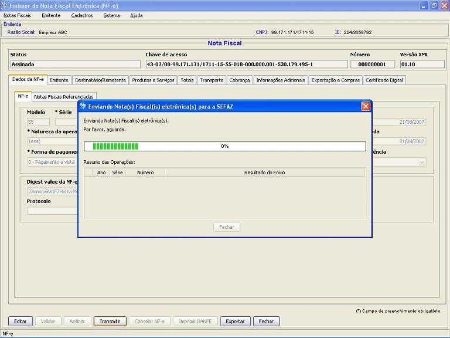
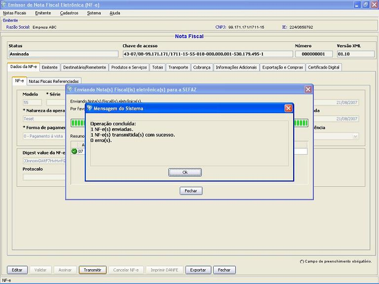

Software Emissor NF-e
Transmitindo uma Nova Nota Fiscal
eletrônica (NF-e)
A transmissão da
NF-e é o processo de envio do
documento eletrônico para a SEFAZ correspondente.
Após esta transmissão
da NF-e entrará em uma fila de processamento na SEFAZ, e
esta enviará
para o Software Emissor um recibo de , sendo parte integrante do
processo de emissão de notas, garantindo a
integridade e autoria da
Nota Fiscal eletrônica.
Para realizar a assinatura é necessário possuir
um
Certificado Digital ICP-Brasil válido, contendo o CNPJ do
emissor.
Pré-condição:
-Um emitente
deverá estar previamente iniciado.
-Deve(m) ser selecionado(s) NF-e('s) em
situação igual a "Assinada"
Existem duas formas para
a realização da transmissão:
1 ) Pela tela de
Detalhamento/Edição da NF-e:
- Na tela de
detalhamento/edição de NF-e, acessar a
opção Transmitir
- Na janela de
seleção de Certificado Digital, escolher o
Arquivo (para
Certificado tipo A1), informando a senha, ou Repositório
(para Certificado tipo A3)
- Após a
seleção, clicar em Selecionar.
- O software Emissor NF-e
irá realizar a
transmissão, exibindo ao final se a NF-e foi enviada para a
SEFAZ com sucesso. Caso a NF-e foi recepcionada com sucesso pela SEFAZ,
a situação da nota passará a "Em
processamento na
SEFAZ" e o processo de busca pelo retono será executado.
Transmissão da NF-e:

Transmissão com sucesso da NF-e:

2 ) Pela tela de
Gerenciamento de NF-e's:
- Acessar o menu: Notas Fiscais -> Gerenciar
Notas
- Realizar a
pesquisa pela(s) nota(s) com situação "Assinada"
que será(ão) assinada(s)
- Selecionar a(s)
nota(s) a ser(em) assinada(s) e clicar em Transmitir
- Na janela de
seleção de Certificado Digital, escolher o
Arquivo (para
Certificado tipo A1), informando a senha, ou Repositório
(para Certificado tipo A3)
- Após a
seleção, clicar em Selecionar.
- O software Emissor NF-e
irá realizar a transmissão,
exibindo ao final se a NF-e foi enviada para a SEFAZ com sucesso. Caso
a NF-e foi recepcionada com sucesso pela SEFAZ, a
situação da nota
passará a "Em processamento na SEFAZ" e o processo de busca
pelo retono
será executado.